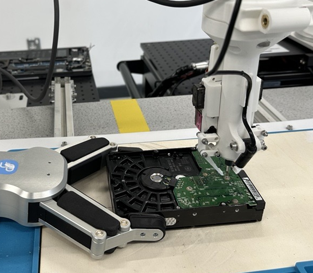
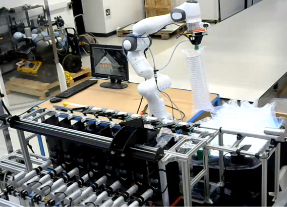

Research ↗
Medical robotics, precision manipulation, disassembly and multi-agent systems.
ARM²Lab studies how robots can perceive, learn and act in complex environments. Our research brings together robotic manipulation, computer vision, control and multi-agent learning, with applications in healthcare, manufacturing, sustainability and marine robotics.
We are based at Heriot-Watt University and the National Robotarium in Edinburgh and we are part of the RAI Group. The lab is co-led by Dr Maria Koskinopoulou and Dr Ignacio Carlucho.


Medical robotics, precision manipulation, disassembly and multi-agent systems.
Meet the researchers and PhD students behind the work.
Selected recent papers from the lab.
Watch demonstrations of our robotic systems.